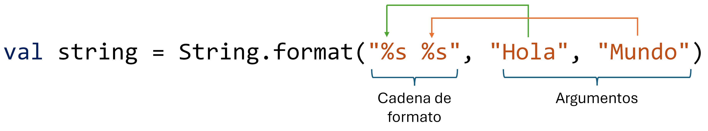

Capítulo 15: Formato de cadenas con String.format¶
Introducción¶
En el capítulo de entrada y salida conociste las plantillas de cadena (el símbolo $), que te permiten insertar variables y expresiones dentro de un texto. Para el día a día, son más que suficientes.
Sin embargo, a veces necesitas un control más fino sobre cómo se ve un valor: alinear texto en columnas, mostrar un número siempre con dos decimales, separar los miles con comas, rellenar con ceros a la izquierda o mostrar un número en hexadecimal. Para todo eso, Kotlin ofrece String.format.
Note
Este capítulo es opcional y de referencia. No necesitas memorizar los especificadores: basta con que sepas que esta herramienta existe y puedas volver aquí a consultar el que necesites. Para insertar valores sin un formato especial, sigue usando las plantillas de cadena ("Hola, $nombre"): son más simples y legibles. Recurre a String.format solo cuando necesites controlar la presentación con precisión.
Sintaxis básica: el especificador %s¶
En Kotlin, el método String.format() devuelve una cadena formateada a partir de una cadena de formato y varios argumentos. La cadena de formato define cómo se combinan los argumentos en la cadena resultante. Por ejemplo:
La cadena "%s %s" es la cadena de formato: define cómo se van a formatear los argumentos "Hola" y "Mundo". El símbolo %s (o %S) es un especificador de formato que representa cada argumento de tipo cadena. Cada especificador se sustituye por los argumentos siguientes, respectivamente (véase la imagen de abajo). En el ejemplo, cada argumento ocupa el espacio correspondiente a su longitud, y los dos quedan separados por un espacio.

Una sintaxis alternativa que ofrece el mismo resultado es:
Para imprimir todos los caracteres de una cadena en mayúsculas, puedes utilizar el especificador %S:
Si la sintaxis de una cadena de formato es incorrecta, se lanza una excepción IllegalFormatException.
Puedes cambiar el orden de los argumentos usando %n\$s, donde n representa el número del parámetro que quieres insertar y s indica que es de tipo String. En Kotlin hay que escapar el símbolo $ (usado para la interpolación), por lo que se escribe %n\$s. Por ejemplo, %1\$s representa el primer argumento de tipo String:
val str1 = "Kotlin"
val str2 = "el mejor lenguaje"
// %s representa el valor de la cadena,
// %1 representa el primer argumento,
// %2 representa el segundo argumento
var str = String.format("%1\$s es %2\$s", str1, str2)
println(str) // Kotlin es el mejor lenguaje
// Puedes cambiar el orden de los argumentos
str = String.format("%2\$s es %1\$s", str1, str2)
println(str) // el mejor lenguaje es Kotlin
Especificadores especiales: %% y %n¶
Además de los especificadores de formato, una cadena de formato puede contener cualquier texto. También existen algunos especificadores especiales: %% inserta el signo %, mientras que %n inserta un salto de línea. Por ejemplo:
Esto produce:
Ten en cuenta que %n puede interpretarse como \r\n o como \n, dependiendo del sistema operativo, por lo que a veces es mejor usar \n para un comportamiento más predecible.
Ancho y justificación¶
El especificador %s puede modificarse para definir el espacio que ocupa un argumento y su alineación. Si N es un número entero positivo, entonces %Ns indica que el argumento debe ocupar N caracteres (indicador de ancho). Si N es menor que la longitud de la cadena, esta ocupará su longitud completa (no se trunca). Por defecto, una cadena se alinea a la derecha. Por ejemplo:
Esto genera:
string
string
string
string
string
string
string
string
string
string
string
string
string
string
string
Para justificar a la izquierda, usa %-Ns. Por ejemplo:
val s1 = String.format("%8s %8s", "Hola", "Mundo")
println(s1)
val s2 = String.format("%-8s %-8s", "Hola", "Mundo")
println(s2)
El resultado será:
Aunque los distintos tipos de argumentos tienen requisitos de formato diferentes, todos definen su ancho y su justificación tal como se ha descrito aquí.
Números enteros¶
El especificador principal para los números enteros (Int, incluidos Long, Short, Byte y BigInteger) es %d, que admite estas propiedades adicionales:
| Formato | Descripción |
|---|---|
%0Nd |
Se rellena con ceros a la izquierda hasta alcanzar la anchura indicada. |
%,d |
Separador de miles. |
%+d |
El número aparece siempre con signo, incluso si es positivo. |
% d |
Para un número positivo, se inserta un espacio a la izquierda. |
%(d |
Un número negativo se coloca entre paréntesis, sin el signo menos. |
Ten en cuenta que el signo - es incompatible con el 0.
Por ejemplo:
val int1 = 1234
val int2 = -4567
println(String.format("%d", int1)) //1234
println(String.format("%8d", int1)) // 1234
println(String.format("%-8d", int1)) //1234
println(String.format("%+d", int1)) //+1234
println(String.format("%+d", int2)) //-4567
println(String.format("%09d", int1)) //000001234
println(String.format("%,10d", int1)) // 1,234
println(String.format("%+,010d", int1)) //+00001,234
println(String.format("%-+,10d", int1)) //+1,234
println(String.format("% d", int1)) // 1234
println(String.format("% d", int2)) //-4567
println(String.format("%(d", int2)) //(4567)
Números octales y hexadecimales¶
También existen los especificadores %o (octal) y %x (hexadecimal en minúsculas) o %X (en mayúsculas) para los números enteros. Ten en cuenta que las propiedades habituales de los enteros (+, ,, y () no son compatibles con estos especificadores.
El indicador # antepone un 0 a un número octal, o un 0x a un hexadecimal.
Por ejemplo:
val int1 = 3465
val int2 = -7896
println(String.format("%o", int1)) //6611
println(String.format("%o", int2)) //37777760450
println(String.format("%#o", int1)) //06611
println(String.format("%8o", int1)) // 6611
println(String.format("%-8o", int1)) //6611
println(String.format("%09o", int1)) //000006611
println(String.format("%x", int1)) //d89
println(String.format("%X", int2)) //FFFFE128
println(String.format("%#X", int1)) //0XD89
println(String.format("%8x", int1)) // d89
println(String.format("%-8X", int1)) //D89
println(String.format("%09X", int1)) //000000D89
Números de coma flotante¶
Existen varios especificadores para los números de coma flotante, como Double y Float. Para la representación decimal normal se usa %f, que tiene todas las propiedades de %d más un indicador para controlar el número de decimales.
Si N y P son enteros positivos, entonces %N.Pf o %.Pf indican que el número debe tener P dígitos decimales. El número se redondea. Si P es mayor que la cantidad real de decimales, se añaden ceros a la derecha.
Por ejemplo:
val double1 = 1234.5678
val double2 = -1234.5678
println(String.format("%f", double1)) //1234.567800
println(String.format("%f", double2)) //-1234.567800
println(String.format("% f", double1)) // 1234.567800
println(String.format("% f", double2)) //-1234.567800
println(String.format("%(f", double1)) //1234.567800
println(String.format("%(f", double2)) //(1234.567800)
println(String.format("%+f", double1)) //+1234.567800
println(String.format("%,f", double1)) //1,234.567800
println(String.format("%-15f", double1)) //1234.567800
println(String.format("%015f", double1)) //00001234.567800
println(String.format("%15.2f", double1)) // 1234.57
println(String.format("%.3f", double1)) //1234.568
println(String.format("%.6f", double1)) //1234.567800
Para la notación científica, usa %e (con "e" minúscula) o %E (con "E" mayúscula). Estos especificadores son incompatibles con la propiedad ,. Por ejemplo:
val double1 = 1234.5678
val double2 = -1234.5678
println(String.format("%e", double1)) //1.234568e+03
println(String.format("%E", double2)) //-1.234568E+03
println(String.format("%15.2e", double1)) // 1.23e+03
println(String.format("%.9E", double1)) //1.234567800E+03
Por último, el especificador %g o %G elige entre la notación decimal y la científica según cuál sea más corta. Por ejemplo:
val double1 = 1000.0
val double2 = 10000000.0
println(String.format("%g", double1)) //1000.00
println(String.format("%g", double2)) //1.00000e+07
println(String.format("%G", double2)) //1.00000E+07
Valores booleanos y caracteres¶
Los especificadores para el tipo Boolean son %b (minúsculas) y %B (mayúsculas). Por ejemplo:
val boolean = true
println(String.format("%b", boolean)) //true
println(String.format("%B", boolean)) //TRUE
Los especificadores para el tipo carácter son %c (minúsculas) y %C (mayúsculas). Por ejemplo:
Lista de especificadores¶
Todos los especificadores mencionados se resumen en la siguiente tabla:
| Especificador | Tipo de argumento | Salida |
|---|---|---|
%s, %S |
Cualquier tipo que implemente toString() |
Cadena de caracteres |
%d |
Int, Byte, Short, Long, BigInteger |
Número entero decimal |
%o, %#o |
Int, Byte, Short, Long, BigInteger |
Número octal |
%x, %X |
Int, Byte, Short, Long, BigInteger |
Número hexadecimal |
%f |
Double, Float |
Número decimal de coma flotante |
%e, %E |
Double, Float |
Coma flotante en notación científica |
%g, %G |
Double, Float |
Coma flotante en notación decimal o científica |
%b, %B |
Boolean |
Valor booleano |
%c, %C |
Char |
Carácter |
%n, \n |
(ninguno) | Nueva línea |
%% |
(ninguno) | El carácter % |
Resumen¶
En este capítulo, de carácter opcional, conociste una herramienta para dar formato preciso a las cadenas:
String.format(o"...".format(...)) construye una cadena a partir de una cadena de formato y sus argumentos.- Cada especificador empieza por
%:%spara cadenas,%dpara enteros,%fpara decimales,%xpara hexadecimal,%bpara booleanos y%cpara caracteres, entre otros. - Puedes controlar el ancho, la justificación, el relleno con ceros, el separador de miles y la cantidad de decimales.
- Para los casos sencillos, sigue prefiriendo las plantillas de cadena (
$); recurre aString.formatsolo cuando necesites este control fino.